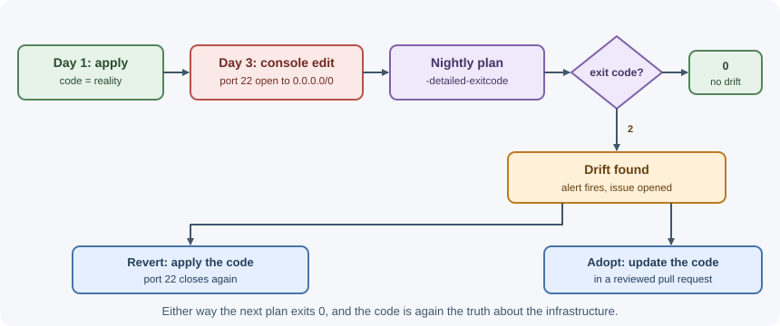

IaC Fundamentals¶
Infrastructure as code (IaC) manages infrastructure the way software manages behavior: in text files, under version control, changed through review, and applied by tools. This lesson explains the problems of creating infrastructure by hand, the difference between declarative and imperative approaches, idempotency and desired state, what state files are and why they matter, the plan and apply cycle, drift and how to detect it, how provisioning differs from configuration management, the main tools and how they compare, and how IaC changes flow through pull requests.
Why it matters¶
Infrastructure built by clicking in a console works until someone needs to rebuild it, copy it, audit it, or understand why it changed. Then the knowledge exists only in memory and screenshots: which security group rules were added during an incident, which bucket setting someone toggled, why staging and production behave differently. Servers and cloud accounts that nobody dares to touch, because nobody knows exactly how they were made, are the infrastructure version of legacy code.
IaC turns infrastructure changes into reviewed diffs with a preview of their effect, makes environments reproducible from code, and makes it possible to answer "who changed this, when, and why?" from Git history. It also makes infrastructure changes a normal part of a team's delivery flow instead of tickets to another team.
Real-world usage¶
- Martin Fowler on snowflake servers. The bliki entry SnowflakeServer describes servers that have been configured by hand for so long that they are unique and impossible to reproduce, and argues for automated, reproducible configuration instead: the problem IaC exists to solve.
- HashiCorp Terraform. The Terraform core workflow is write, plan, apply: changes are written as code, previewed as an execution plan, and applied after review, the cycle described on this page.
- AWS CloudFormation drift detection. The
drift detection documentation
explains how CloudFormation compares a stack's expected configuration
with the actual resource properties and reports resources as
IN_SYNC,MODIFIED, orDELETED, which is the managed-service form of the drift detection described below. - OpenTofu. The OpenTofu manifesto explains why the community forked Terraform after HashiCorp moved it from the open-source MPL 2.0 license to the Business Source License in August 2023. OpenTofu is hosted by the Linux Foundation and has joined the CNCF as a sandbox project.
Popular tools and providers: Terraform, HCP Terraform, OpenTofu, AWS CloudFormation, AWS CDK, Pulumi, Azure Bicep, Crossplane, Ansible, Chef, Puppet, Packer, Terragrunt, Atlantis, Spacelift, env0, and policy tools such as Open Policy Agent, Checkov, and Trivy.
How it works¶
The problems with "ClickOps"¶
Creating infrastructure by hand in a console ("ClickOps") causes predictable trouble:
- No reproducibility. Rebuilding production after a region failure, or creating a faithful staging, depends on someone remembering every setting.
- No review. A one-click change to a security group or bucket policy reaches production without a second pair of eyes or a preview of its effect.
- No history. Cloud audit logs record API calls, but not intent, and they are not where engineers look.
- Drift between environments. Each environment is hand-tuned and slowly diverges.
- Slow, error-prone scaling. Creating the tenth similar environment by hand takes as long as the first and introduces new mistakes.
The console remains useful for exploring and for emergencies, but changes made there should be rare, recorded, and brought back into code.
Declarative and imperative approaches¶
![Diagram: the desired state in code says bucket uploads has versioning on, policy uploads-rw exists, and a new bucket logs exists; the actual state from the state file and the cloud has bucket uploads with versioning off, policy uploads-rw, and bucket old-exports which was removed from code; comparing them produces a plan to create bucket logs, update bucket uploads versioning, destroy bucket old-exports, and leave the policy unchanged; apply makes actual equal desired so the next plan shows no changes; below, an imperative script to create bucket logs fails on its second run because the bucket exists, while the declarative statement that bucket logs exists produces no changes on a second run.](../iac-declarative-reconcile.svg)
| Imperative | Declarative | |
|---|---|---|
| You write | Steps: create this, then modify that | The end state: these resources with these settings |
| Running twice | May fail or create duplicates unless every step checks first | Produces no changes the second time |
| Handling existing resources | Your script must look them up | The tool compares desired with actual |
| Deleting | You must write the deletion steps | Removing the resource from code plans its deletion |
| Examples | Shell scripts with cloud CLIs, SDK scripts | Terraform, OpenTofu, CloudFormation, Bicep, Kubernetes manifests |
Some tools mix both: Pulumi and AWS CDK let you write general-purpose code (TypeScript, Python, Go), but that code builds a declarative model, which an engine then reconciles. Ansible is procedural (tasks run in order) but its modules are mostly declarative and idempotent.
Idempotency and desired state¶
An operation is idempotent if applying it once or many times has the same effect. Declarative IaC is built on it: "this bucket exists with versioning enabled" can be applied any number of times; after the first time, nothing changes.
The desired state is what the code says. The actual state is what
exists in the cloud. Reconciliation is computing and applying the
difference. Terraform reconciles when you run apply; Kubernetes
controllers and GitOps agents reconcile continuously (see
immutable infrastructure and GitOps).
State files¶
Terraform and OpenTofu keep a state file: a JSON document that maps
each resource address in the code (module.uploads.aws_s3_bucket.this)
to a real object (taskflow-prod-uploads-...), with its last known
attributes and dependencies. State is needed because:
- the code alone does not say which real resource a block refers to,
- deletions are detected by finding objects in state that are no longer in code,
- reading every attribute from the cloud on every run would be slow and some attributes are not readable back.
Because of what it contains, state must be treated as sensitive:
- It often includes secrets in plain text (generated passwords, private
keys, connection strings), even for attributes marked
sensitive, which only hides them from CLI output. - It must be shared and locked: a team keeps it in a remote backend (S3, Azure Blob Storage, Google Cloud Storage, HCP Terraform) with a lock, so two applies cannot run at once.
- It must be backed up (bucket versioning) and never edited by
hand; use
terraform statecommands,moved,import, andremovedblocks instead.
Not every tool has a separate state file: CloudFormation keeps stack state inside AWS, and Bicep deployments compare with Azure itself. Pulumi keeps state in Pulumi Cloud or a self-managed backend, much like Terraform.
Plan and apply¶
- Plan reads state, refreshes it against the real resources, compares
with the code, and prints what it would create (
+), change in place (~), destroy (-), or replace (-/+). Nothing is changed. - Apply performs those changes and records the results in state.
Applying a saved plan (
terraform plan -out=tfplan, thenterraform apply tfplan) guarantees that what runs is exactly what was reviewed; if state changed in between, Terraform refuses the stale plan.
Read plans for the dangerous symbols: -/+ (replace) on a database or a
bucket means data loss unless you intended it.
Drift and drift detection¶
Drift is a difference between the code (and state) and reality, caused by changes made outside the IaC process: console edits, scripts, another tool, or the cloud provider changing defaults.

Detecting it:
- Run
terraform plan -detailed-exitcodeon a schedule: exit code0means no changes,1an error,2changes present. - Use the platform's drift tools (CloudFormation drift detection, AWS Config rules, Azure Policy) where available.
- In GitOps, the controller reports resources as out of sync and can correct them automatically.
Resolving it is a decision, not a reflex: revert (apply the code, undoing the manual change) when the change was a mistake, or adopt (update the code to match) when the change was right but made the wrong way. Then reduce the causes: restrict write access in production consoles, provide a recorded break-glass procedure, and make the pipeline the normal path.
Provisioning compared with configuration management¶
| Provisioning | Configuration management | |
|---|---|---|
| Question | Which resources exist? | What is installed and configured inside a server? |
| Examples | VPCs, subnets, VMs, databases, buckets, IAM, DNS | Packages, files, users, services on a VM |
| Tools | Terraform, OpenTofu, CloudFormation, Pulumi, Bicep | Ansible, Chef, Puppet, Salt |
| Typical cadence | When the architecture changes | Every change to server contents (or once, into an image) |
Containers and machine images have shrunk the role of configuration management: instead of configuring running servers, teams bake an image (container or VM) and replace servers. Ansible remains common for servers that cannot be replaced easily, on-premises machines, network devices, and building images.
Comparing the main tools¶
| Tool | Language | State | Scope | Preview | Notes |
|---|---|---|---|---|---|
| Terraform | HCL | State file in a backend | Any provider (clouds, SaaS, Kubernetes, DNS) | terraform plan |
Largest provider ecosystem; Business Source License since 2023 |
| OpenTofu | HCL (compatible with Terraform 1.5 code and later additions) | State file | Same providers | tofu plan |
Open-source fork under MPL 2.0, Linux Foundation; adds features such as state encryption |
| AWS CloudFormation | YAML or JSON | Managed by AWS (stacks) | AWS | Change sets | No state to manage; AWS only |
| AWS CDK | TypeScript, Python, Java, C#, Go | CloudFormation stacks | AWS | cdk diff |
Code synthesizes CloudFormation templates |
| Pulumi | TypeScript, Python, Go, C#, Java, YAML | Pulumi Cloud or self-managed backend | Many providers | pulumi preview |
General-purpose languages, loops, tests |
| Azure Bicep | Bicep DSL | Azure Resource Manager | Azure | az deployment group what-if |
Compiles to ARM templates |
| Ansible | YAML playbooks | None (checks the target each run) | Servers, network devices, some cloud APIs | --check --diff |
Agentless over SSH; configuration management first |
How to choose: Terraform or OpenTofu for multi-provider infrastructure and the broadest community; CloudFormation, CDK, or Bicep when you are committed to one cloud and want its native tooling; Pulumi when your team strongly prefers a general-purpose language; Ansible for configuring servers rather than creating cloud resources.
IaC in pull requests¶
The workflow that makes IaC safe:
- Format and validate (
terraform fmt -check,terraform validate) on every push. - Static and policy checks: Checkov, Trivy, or Open Policy Agent rules that reject public buckets, unencrypted volumes, or wildcard IAM policies before anyone reviews.
- Plan with a read-only role and post the plan output on the pull request.
- Review the plan, especially replacements and destroys.
- Apply on merge from the saved plan, with a role that can write, available only to the main branch pipeline.
- Record the apply output and keep state history.
Tools such as Atlantis, HCP Terraform, Spacelift, and env0 implement this loop; GitHub Actions can do it with a few jobs (see Terraform in practice).
When to use and when not to use¶
| Situation | Approach |
|---|---|
| Anything in production that you would need to rebuild | IaC |
| Several environments that should match | IaC with modules shared across environments |
| Quick experiment in a sandbox account | The console is fine; delete it afterwards or codify it if it stays |
| Emergency fix during an incident | Console or CLI if needed, then adopt or revert through code within a day |
| Resources that change per request (user uploads, queue messages) | Application code, not IaC |
| Server contents on machines you cannot replace | Configuration management (Ansible) |
| Kubernetes workloads | Manifests or Helm managed through GitOps |
Practical examples¶
Imperative script compared with declarative code¶
#!/usr/bin/env bash
# scripts/create-logs-bucket.sh: imperative, not idempotent
set -euo pipefail
aws s3api create-bucket \
--bucket taskflow-prod-logs-example \
--region eu-west-1 \
--create-bucket-configuration LocationConstraint=eu-west-1
aws s3api put-bucket-versioning \
--bucket taskflow-prod-logs-example \
--versioning-configuration Status=Enabled
# A second run fails at create-bucket (BucketAlreadyOwnedByYou in most regions),
# and nothing here ever removes the bucket or notices manual changes.
# logs.tf: declarative; apply as often as you like
resource "aws_s3_bucket" "logs" {
bucket = "taskflow-prod-logs-example"
}
resource "aws_s3_bucket_versioning" "logs" {
bucket = aws_s3_bucket.logs.id
versioning_configuration {
status = "Enabled"
}
}
The Terraform version creates the bucket once, reports "No changes" on every later run, turns versioning back on if someone disables it, and plans the bucket's deletion if the blocks are removed.
Nightly drift detection with GitHub Actions¶
# .github/workflows/terraform-drift.yml
name: Terraform drift check
on:
schedule:
- cron: "17 2 * * *" # every night at 02:17 UTC
workflow_dispatch:
permissions:
contents: read
id-token: write # OIDC to AWS, no stored keys
issues: write
jobs:
drift:
runs-on: ubuntu-latest
defaults:
run:
working-directory: envs/prod
steps:
- uses: actions/checkout@v7
- uses: hashicorp/setup-terraform@v4
with:
terraform_wrapper: false # keep Terraform's real exit codes
- uses: aws-actions/configure-aws-credentials@v6
with:
role-to-assume: arn:aws:iam::123456789012:role/taskflow-terraform-readonly
aws-region: eu-west-1
- run: terraform init -input=false
- id: plan
run: |
set +e
terraform plan -detailed-exitcode -input=false -lock=false -no-color > plan.txt
echo "exitcode=$?" >> "$GITHUB_OUTPUT"
- name: Fail on errors
if: steps.plan.outputs.exitcode == '1'
run: cat plan.txt && exit 1
- name: Open an issue on drift
if: steps.plan.outputs.exitcode == '2'
env:
GH_TOKEN: ${{ github.token }}
run: |
gh issue create \
--title "Terraform drift in prod ($(date -u +%F))" \
--body "A scheduled plan found changes. See the workflow run: ${{ github.server_url }}/${{ github.repository }}/actions/runs/${{ github.run_id }}"
-lock=falselets a read-only role plan without writing a lock; it is acceptable for a plan that never applies.- The issue links to the run instead of pasting the plan, because plan output can contain values you would not put in an issue.
Configuration management with Ansible, for comparison¶
# playbooks/api-hosts.yml: configure existing VMs (contents, not existence)
- name: Configure TaskFlow API hosts
hosts: api
become: true
tasks:
- name: Install the Node.js package
ansible.builtin.apt:
name: nodejs
state: present
update_cache: true
- name: Install the systemd unit
ansible.builtin.template:
src: taskflow-api.service.j2
dest: /etc/systemd/system/taskflow-api.service
mode: "0644"
notify: Restart taskflow-api
- name: Enable and start the service
ansible.builtin.systemd_service:
name: taskflow-api
enabled: true
state: started
daemon_reload: true
handlers:
- name: Restart taskflow-api
ansible.builtin.systemd_service:
name: taskflow-api
state: restarted
ansible-playbook -i inventory/prod.ini playbooks/api-hosts.yml --check --diff # preview
ansible-playbook -i inventory/prod.ini playbooks/api-hosts.yml # apply
Each task describes a state (present, started), so running the
playbook again changes nothing unless a host drifted. The handler
restarts the service only when the unit file actually changed.
Best practices¶
- Put everything you would need to rebuild under code, starting with new resources and importing existing ones gradually.
- Prefer declarative tools for provisioning; keep imperative scripts for one-off tasks.
- Store state remotely, encrypted, versioned, locked, and readable only by the pipeline and a few administrators.
- Review plans, not just code; look for replacements and destroys.
- Apply only from CI, from a saved plan, with a role that only the main branch pipeline can assume.
- Detect drift on a schedule and decide deliberately to revert or adopt.
- Restrict console write access in production; keep a recorded break-glass process.
- Add policy checks for security basics before human review.
- Keep provisioning and server configuration separate, and prefer images over configuring live servers.
In production¶
- A plan wants to replace the production database.
Detect:
-/+on a database resource in the plan. Cause: a change to an attribute that forces replacement (name, engine, subnet group), or a renamed resource address. Fix: stop; use amovedblock for renames, change attributes in place where supported, and addprevent_destroylifecycle rules on stateful resources. - Two engineers applied at the same time and state is corrupted. Detect: state errors or resources missing from state after concurrent runs. Cause: local state or a backend without locking. Fix: remote state with locking; restore the previous state version from the versioned bucket.
- A security group rule keeps coming back after it is removed. Detect: the rule reappears after each apply. Cause: it is in code, and someone removed it only in the console. Fix: change the code, not the console.
- A rule someone added by hand disappeared after a routine deploy. Detect: an incident fix stops working right after an unrelated apply. Cause: drift was silently reverted by apply. Fix: nightly drift detection, and a rule that emergency changes are adopted into code within a day.
- Secrets found in a state file in a public bucket.
Detect: a scanner or bucket audit finds
terraform.tfstate. Cause: state stored without access controls. Fix: rotate the exposed secrets, lock the bucket down, enable encryption, and limit who can read state. - Production and staging behave differently although both are "in Terraform". Detect: plans for each environment differ beyond expected values. Cause: copy-pasted configurations that diverged. Fix: shared modules with per-environment variables, and the same module versions promoted from staging to production.
Important terminology¶
- Infrastructure as code (IaC): managing infrastructure through versioned, reviewed, machine-applied definitions.
- ClickOps: creating or changing infrastructure manually in a console.
- Declarative: describing the desired end state.
- Imperative: describing the steps to perform.
- Idempotent: having the same effect whether applied once or many times.
- Desired state / actual state: what the code says and what exists.
- Reconciliation: making actual state match desired state.
- State file: the record mapping code addresses to real resources.
- Plan: a preview of the changes an apply would make.
- Drift: differences between code and reality caused by changes outside the IaC process.
- Provisioning: creating and managing infrastructure resources.
- Configuration management: managing what is installed and configured inside servers.
Common mistakes and misconceptions¶
- Treating IaC as scripts that create resources once.
- Keeping state on a laptop or in Git.
- Approving pull requests without reading the plan.
- Applying from developers' machines with administrator credentials.
- Fixing things in the console and never bringing them back into code.
- Believing
sensitive = truekeeps secrets out of state. - Using configuration management to create cloud resources it cannot track or delete.
- Copying one environment's code to create another instead of using modules.
Revision questions¶
- What problems does ClickOps cause, and when is using the console still acceptable?
- Explain the difference between declarative and imperative infrastructure code with an example.
- Why does Terraform need a state file, and why is that file sensitive?
- What do the plan symbols
+,~,-, and-/+mean, and which one should make a reviewer stop? - A nightly
terraform plan -detailed-exitcodereturns 2. What does it mean, and what are the two ways to resolve it? - How does provisioning differ from configuration management? Give one tool for each.
- Compare Terraform, CloudFormation, and Pulumi on language, state, and scope.
- Describe a pull request workflow for infrastructure changes, including which roles can plan and which can apply.